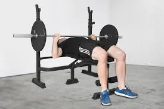

The bench press is an essential for musscle growth, because it activates the whole entire chest. For better chest activation it is advised to not use any leg drive and to lay flat on your back.
In order to perform the bench press you need to have a bench on which you can lay flat on your back and a barbell. Once you are flat on your back you pick up the barbell and slowly let it down until it touches your chest. After that you push the barbell up to its starting position.
Explanation in detail.